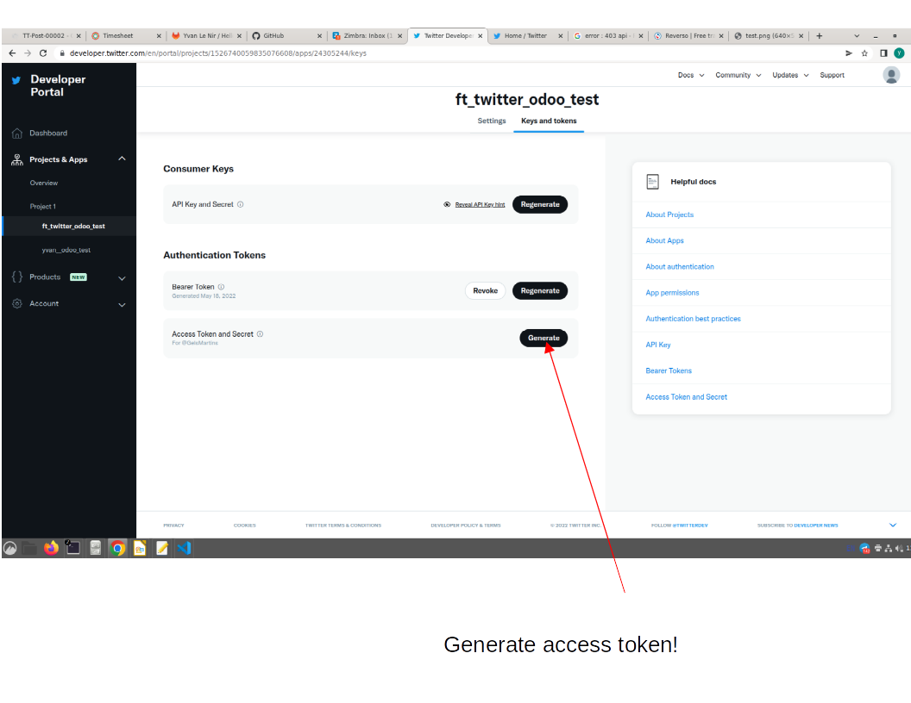
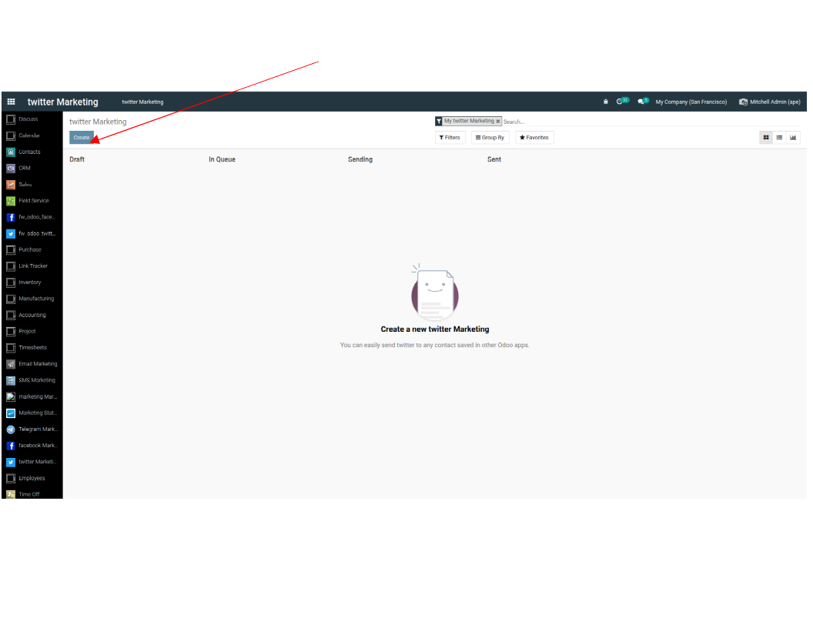
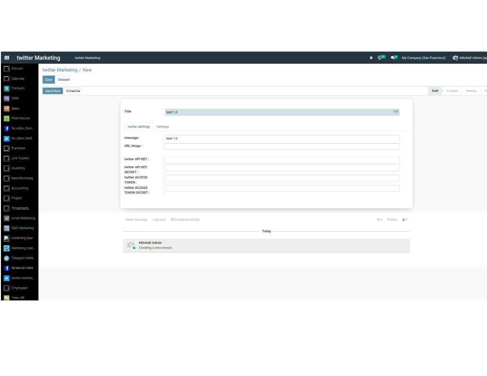
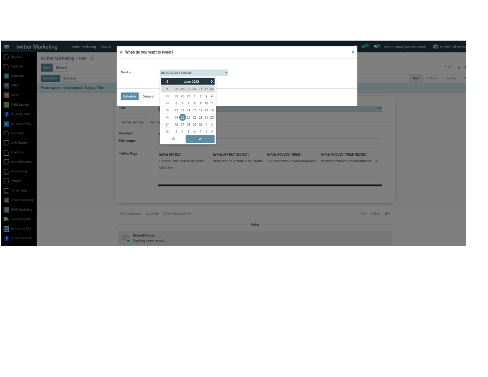
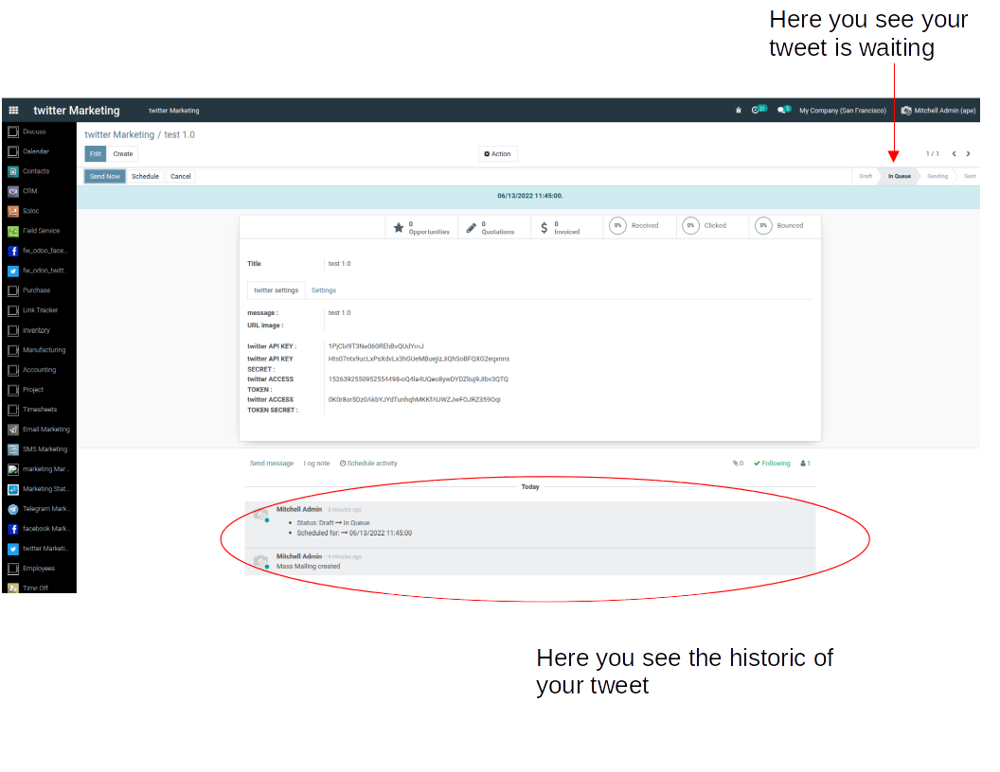
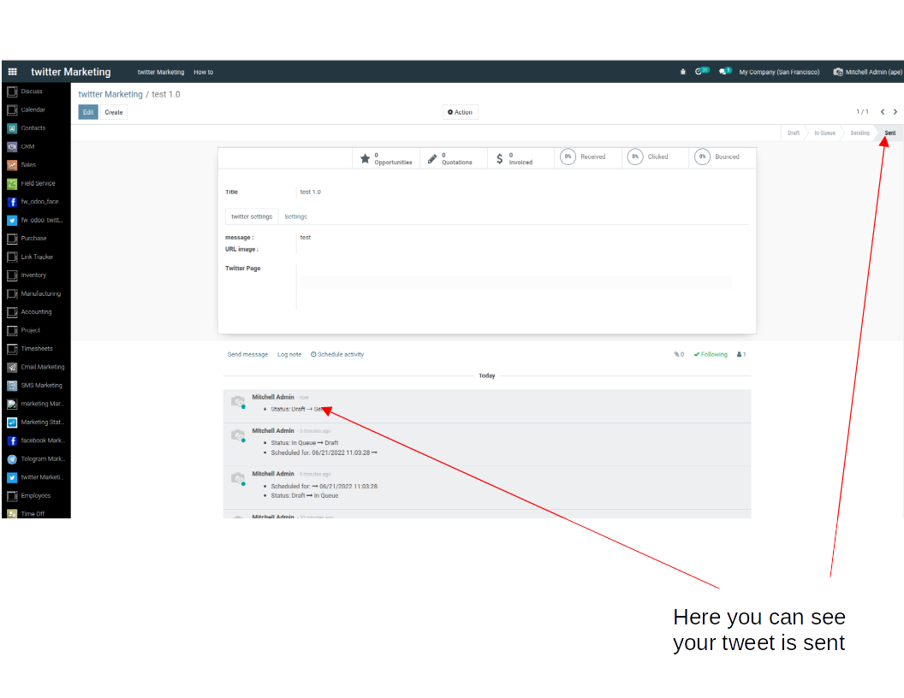

Then their are few step to use this module :
- First : create an account on Twitter Developer Platform
- Second : create your apps
- Third : change the settings
- Fourth : Post on Twitter from Odoo
First :
- Go on Twitter Developer Platform using this link
- Ask for a developer account
- It will ask several question to approve your account :
-> It will ask what you will do with your apps (Tweet, Retweet, fiollow,..)
-> You must complete fill for justify your account
- Try to be the clearest as possible because
- Then you must wait the confirmation by e-mail
- Sometimes you can receive an e-mail saying they need more details
- When you receive your e-mail, go back on your developper account by clicking on the e-mail link
Second :
- You will be on the settings of your new apps (if not click on new apps in the category Project and apps )
- It will give you three settings :
-> Api Key
-> API Key Secret
-> Bearer Token
- Save them!!
- Usually it show you an example, for trying your apps with the bearer token
- Then click on got to dashboard
Third :
- Select your app
- Go to the bottom of the page, to change the settings
- Change the permission to Read, write, and direct message
- Put any URL you want for the required field
- Save your new settings
- Generate Access token and Access token secret

- Save them!!
Fourth :
- Go on odoo
- Click on twitter Marketing
- Click on create

- Write the messag for your tweet
- Write the path link to your directory where your image is located
- Write all your key and access token, in the order:
-> API KEY, API KEY SECRET, ACCESS TOKEN, ACCESS TOKEN SECRET

Note :
- You can tweet a message, an image or both
- All the settings are already done, but you can change it if you want
- if you click on "send now" it will ask a confirmation, then click on "OK"
- if you click on "schedule" it will open a small window to choose the date and hour


- Now your tweet is post, you can create a new tweet or retry on this one
- Note : you can not send two times the same post

- Then go on Twitter and you will see your tweet